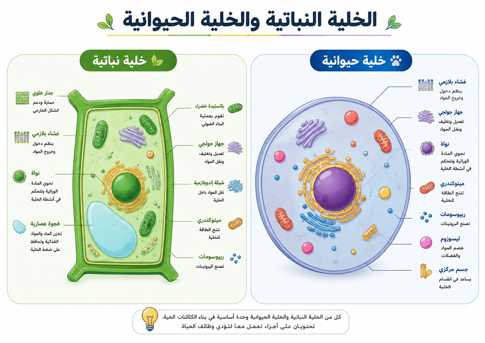
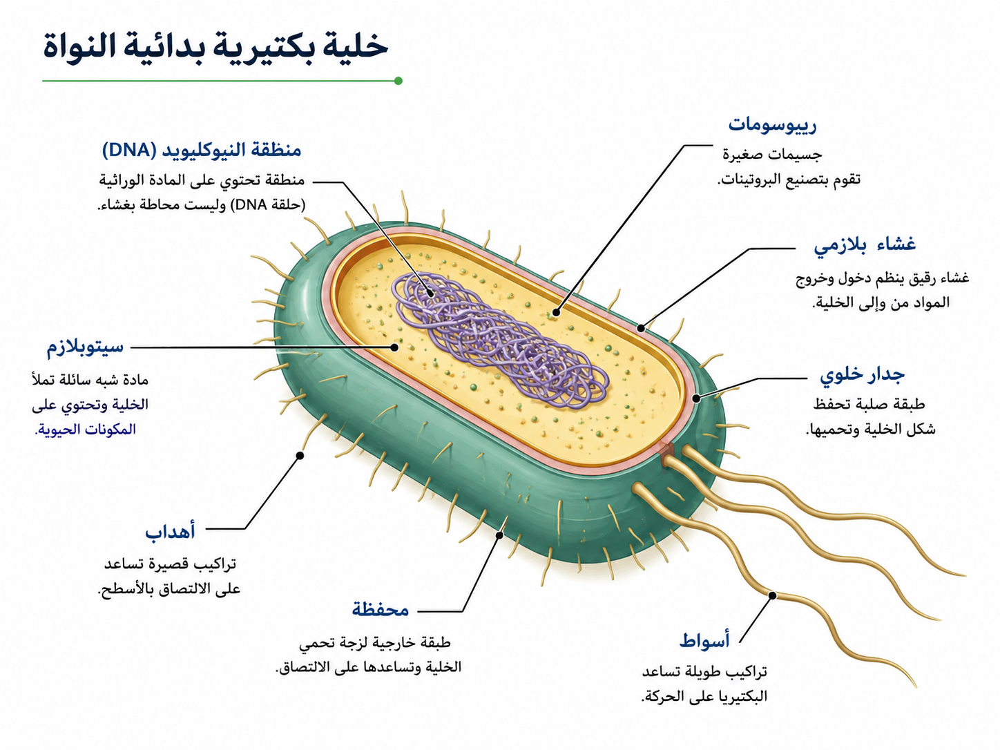
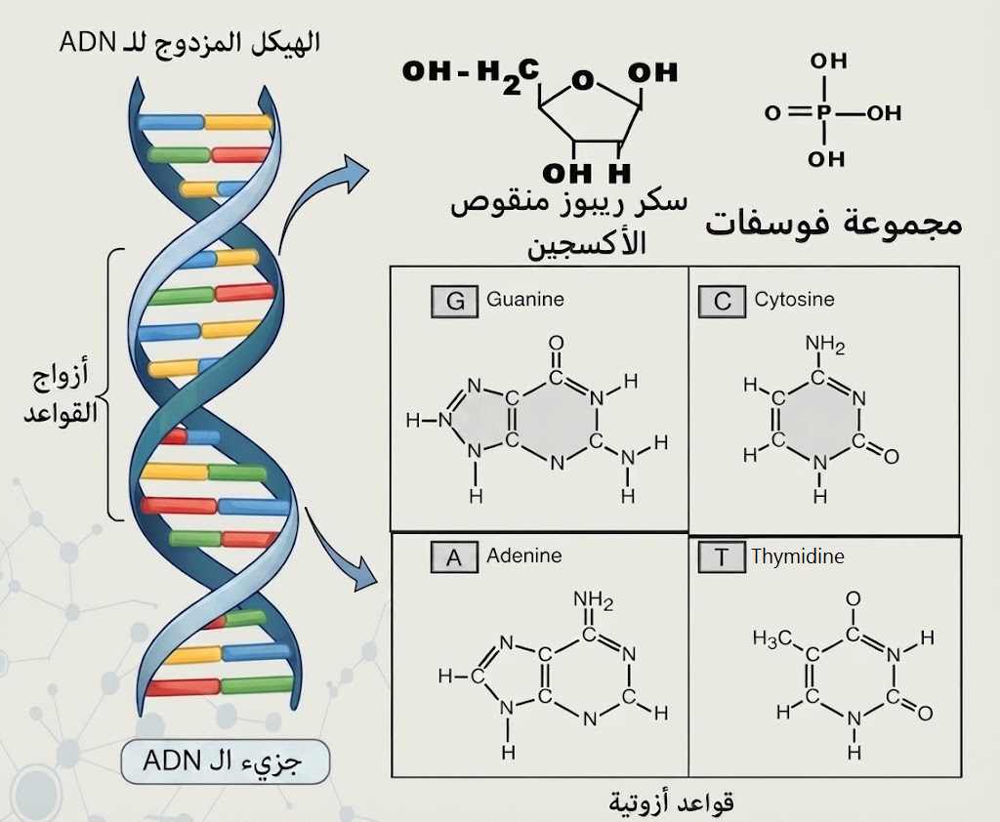
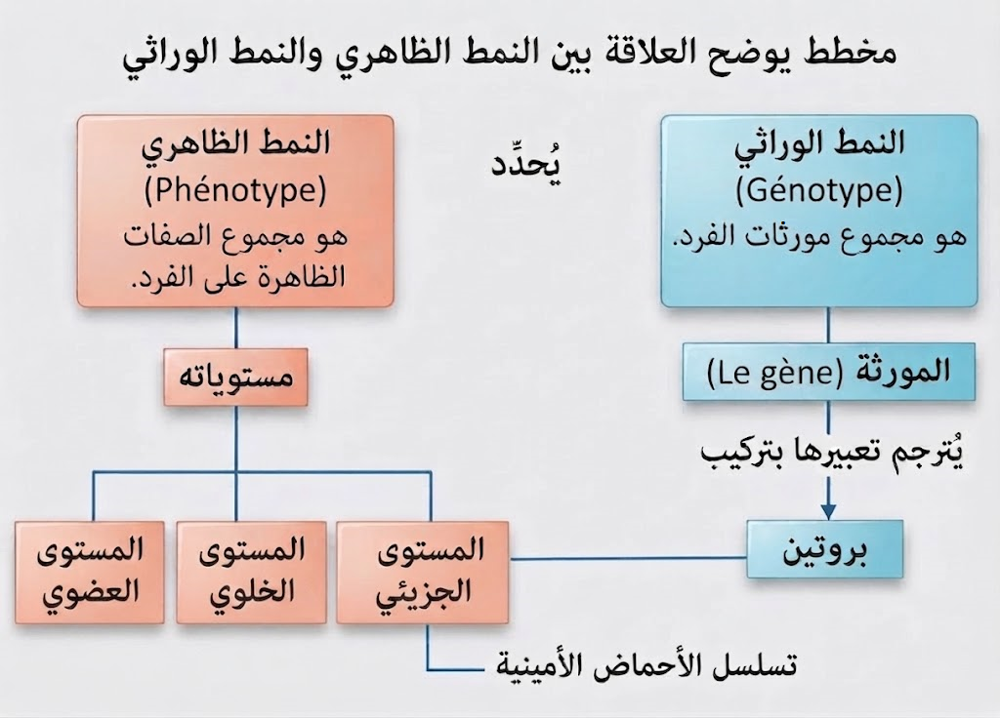

تنفرد الخلية النباتية بوجود تراكيب تعطيها الصلابة والقدرة على صنع الغذاء:
تتميز الخلية الحيوانية بمرونتها وغياب الجدار الصلب:
عضيات أساسية تتواجد في نوعي الخلايا للقيام بالوظائف الحيوية:

خلايا بسيطة جداً تخلو من النواة الحقيقية ومن العضيات المغلفة:

تُعرّف بأنها الهياكل الحاملة للبرنامج الوراثي للكائن الحي:
هو الجزيء الكيميائي المسؤول عن تخزين ونقل المعلومة الوراثية:

هي الوحدة الوظيفية للمعلومة الوراثية:
هو أحد الأشكال الممكنة والمتباينة لنفس المورثة:
هو مجموع المورثات والأليلات التي يمتلكها الفرد في خلاياه، ويمثل المخطط البنائي أو الشيفرة الكامنة داخل جزيئات الـ ADN والتي تحدد الإمكانيات البيولوجية للفرد.
هو مجموع الصفات المرئية أو القابلة للقياس الناتجة عن تعبير النمط الوراثي وتأثير العوامل البيئية.
يظهر على ثلاثة مستويات أساسية:
القاعدة الأساسية: النمط الظاهري = النمط الوراثي + تأثير العوامل البيئية.

هي تغيرات فجائية، عشوائية، وثابتة في تتابع النيكليوتيدات (القواعد الأزوتية) لجزيء الـ ADN.